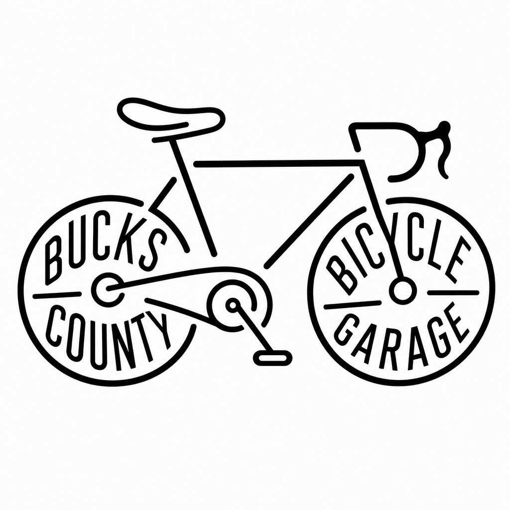

Do I need an appointment?
Yes. Service is scheduled so I can plan the work and turnaround.
Professional bicycle repair from a local, independently operated workshop in Yardley. Over 20 years of hands-on experience, quick turnaround, and convenient pickup and delivery options.

Flat tire? Fast turnaround. $50 labor plus parts. Can't bring your e-bike to us? Pickup and delivery available for an additional fee.
Request a Repair
BCBG is a home-based bicycle service workshop in Lower Makefield. It's a working residential garage, not a walk-in retail bike shop. Service is scheduled so I can be ready for you and your bike when you arrive.
Whether it needs a seasonal tune-up, a repair, or help getting a new bike assembled, the goal is simple: practical work, clearly explained.
$50 labor + parts
Flat tire repair for many e-bikes. Service by appointment; contact us about your bike model.
Tube and tire service to get you rolling again.
Brake adjustment and related service.
Derailleur tuning and drivetrain service.
Wheel truing, tire setup and tubeless work.
New-bike assembly, setup, racks and accessory installation.
Pack a bicycle for travel or shipping.
Getting your bike serviced shouldn't be complicated. Just tell me what you need, arrange a convenient time, and I'll take care of the rest.
Tell me about your bike and what it needs. Text, call, email, or submit a service request online.
Schedule a convenient drop-off at my Yardley-area workshop, or ask about pickup and delivery for an additional fee.
I'll explain what your bike needs, provide straightforward pricing, and let you know when it's ready.
Bucks County Bicycle Garage is an independent, home-based bicycle service operation in the Yardley area, built around more than 20 years of hands-on bicycle maintenance and repair and decades of riding. BCBG operates from a residential garage workshop rather than a retail storefront — intentionally smaller, more personal and appointment-based.

Yes. Service is scheduled so I can plan the work and turnaround.
Yes. BCBG is a residential garage workshop rather than a walk-in retail store, so drop-off is scheduled by appointment in Lower Makefield.
Yes, depending on location and schedule. Ask when you contact me.
Many mechanical bicycle repairs can be handled. Contact me first for electrical or drive-system issues.
BCBG is primarily a service and repair operation rather than a retail bike shop.
Timing depends on the repair and parts availability. I'll give you an expectation when we discuss the bike.
Texting is a great way to get started. Send a quick message about your bike and what it needs, or send the details through the service request form.
Text 267-373-1184Start a service request
Prefer to call?
267-373-1184
Email
buckscountybicyclegarage@gmail.com
Service area
Yardley / Lower Makefield and surrounding Lower Bucks County
View Bucks County Bicycle Garage on Google
Home-based service · Yardley / Lower Makefield, Pennsylvania
Residential garage workshop · Service by appointment.
Bikes, repairs & projects.
A look at what's on the stand, what's being ridden and what's happening around Bucks County Bicycle Garage.